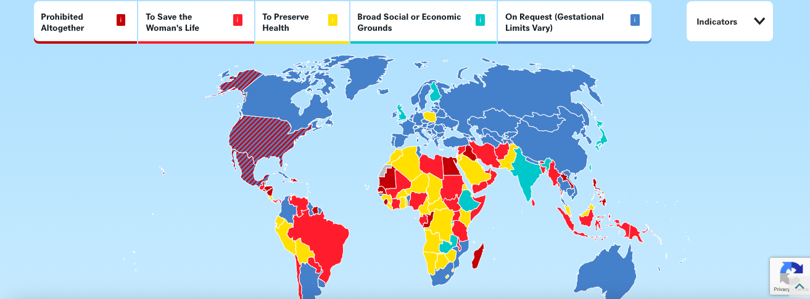

The Problem
The problem I am addressing is the lack of human rights for women and those that are able to conceive due to America’s restrictions on abortion laws and mysognistic ideas. Below is a map that shows the contradictions on abortion rights in America.
Who is impacted?
Teen Mothers
All Women
People able to get pregnant
Low-income and marginalized communities
What are some misconceptions about this cause?
↳ Some people believe that because their religion don't support abortions it should be taken away from everyone.
↳ People who advocate for abortion laws wish to act carelessly with their bodies and not have to deal with a consequence of their actions.
But this cause is not for any of that, it is a cause to give women and those able to get pregnant the power over their bodies. To give them the authority and respect they deserve. That is what this cause is.